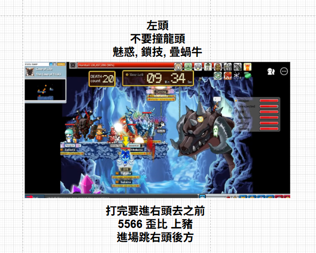
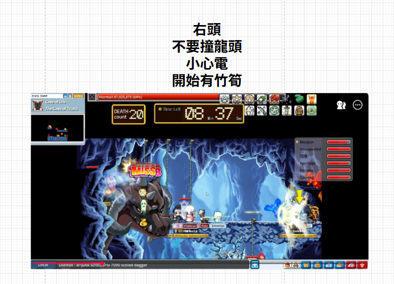
右頭 進場黑哥下煙 煙後其他人掛繩
2F 可口 & 遊俠
1F 超人 & 農夫 & 企鵝
企鵝上船跳打可以打 下船原地跳緩降躲電 竹筍右走躲
物免魔免可口跟農夫換位
然後等到時間快到 再進本體
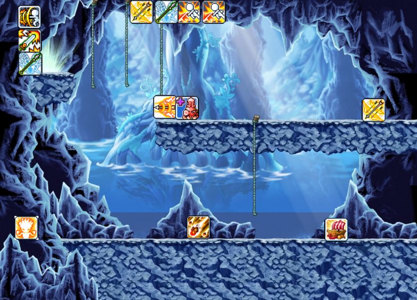
安全點大概位置
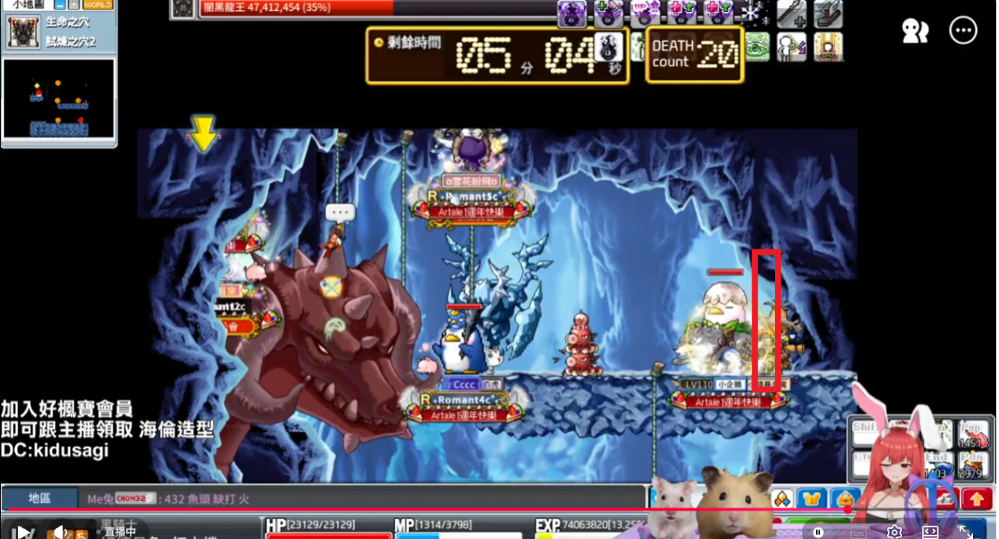


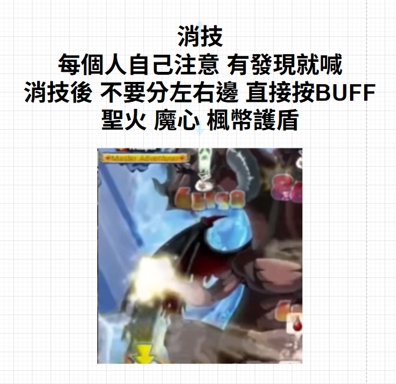

⚔️ 討伐部位順序
尾巴
➜
左手
➜
左頭 & 右手
➜
中頭
➜
右頭
➜
腳 & 翅膀
起始站位
請記得把血補滿 尤其是敏職 血量很剛好
開局建議竹筍吃出原地就吃 不要怕 後面煙下完 會放龍消debuff
遊俠左上開局 只要下面的人不跳 前面的人不來 你不會吃到傳導電
海豹&黑哥站位重疊 躲招往前走下小平台
55662個小平台都給你 建議跳躲紅咬 竹筍吃到沒關西 紅閃至紅框處躲看看 躲不了 請吃紅閃疊電 躲竹筍 注意debuff層數
九歌&ruby 跳打的同時請注意左右手黃光的圖示 一直補火力消 黃光結束才消技
下層輕踩(9400UP)記得躲(尤其是麻糬)
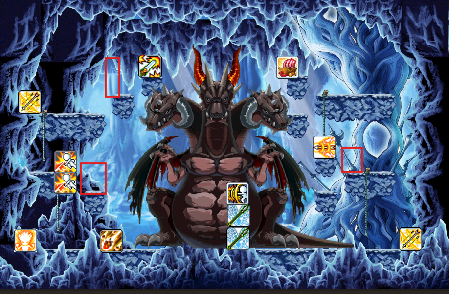
27:30 海豹下一煙
下煙完請通知時間 以利後續接上 避免時間不同步 所以快到記得提醒 (還有20秒... 還有10秒...)
下煙前&置換前請先移動角色避免卡技能bug
九歌&ruby在煙內所以比較有空請看左右手出金黃色光芒就狂補火
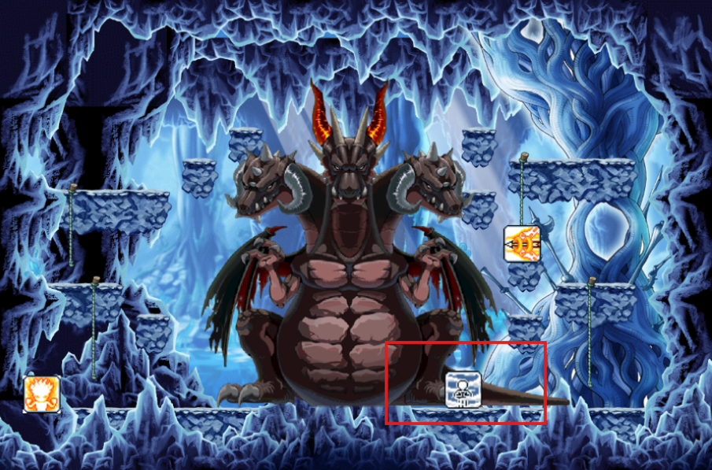
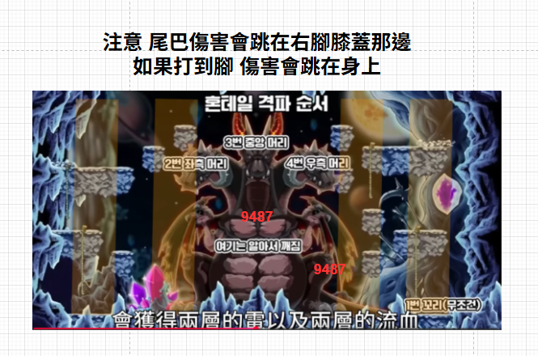
26:50 黑哥下二煙
黑哥下完煙退隊 海豹踢5566組黑哥 >> 超人置換 >> 踢黑哥組5566 >> 農夫組黑哥
26:10 海豹下三煙
25:30 黑哥下四煙
24:50 黑哥通知大家離開 左上右上先走
回復起始站位
可口停手30秒 注意一下要不要停手 可能不用因為下到4顆煙
龍尾斷後
位置不變
超人&ruby配合放龍進去 一定要消 但不要放錯 錯過就下一次 不急
超人請提早農夫停火流星 避免卡龍
黑鎖出之後 麻糬開始計時 快到時請喊 還有10秒...
左右上排都靠邊邊可以躲 5566 請加油.. 因為你如果去跟遊俠站 一個振翅遊俠就掰了 所以希望你不要動 要躲在移動
大概這個時候 差不多可以消debuff 請超人指揮
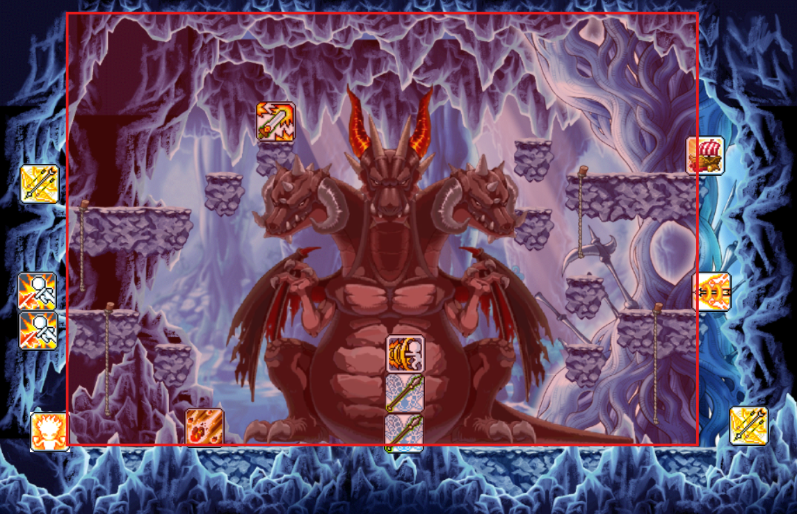
我預期是左頭先掉 集中中頭 左頭掉了 開始換位
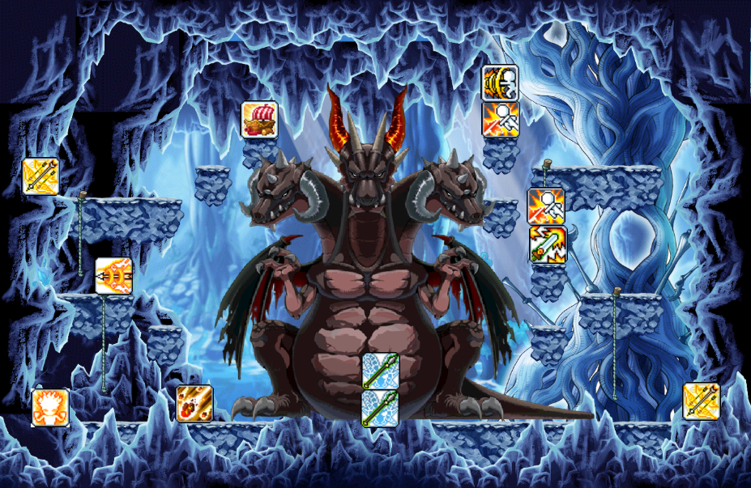
大電出了 海豹下五煙
九歌&麻糬上來補傷害
看到下煙之後 超人&ruby請消debuff (注意祭壇變了沒)
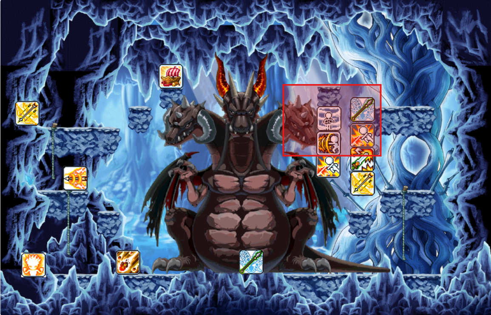
黑哥下六煙 理論上煙會蓋滿大電
超人消debuff之後 請煙內的人去吃大電疊電
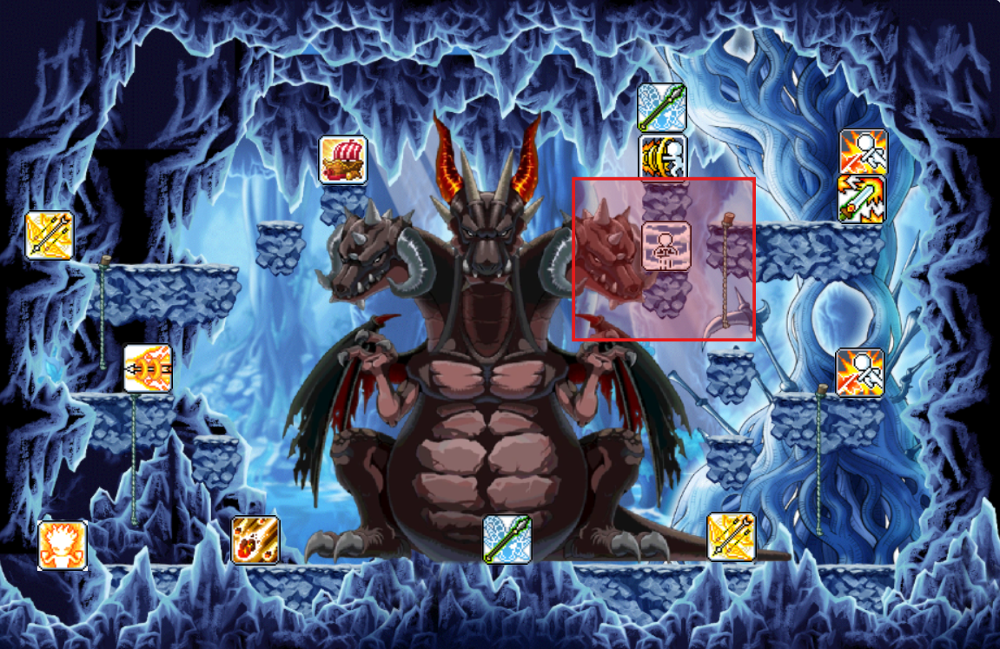